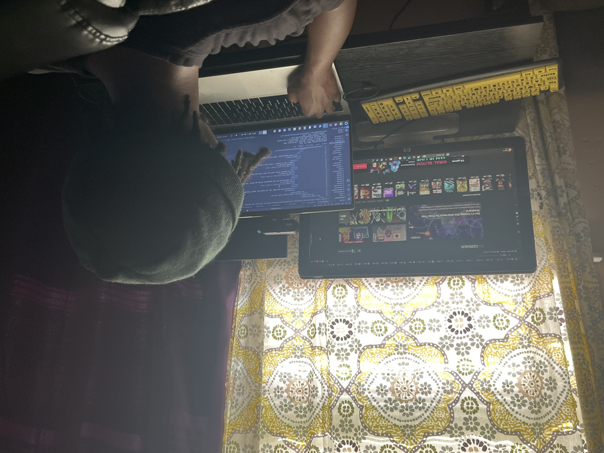

More About Me
I'm a Software Engineer who began with a interest in making Roblox games. I experimented the engine's code and after a while, started to branch off into coding. I started to look into programs where I could get the skills to better my understanding which brought me to App Academy. Through the course, I've furthered my skills in JavaScript, HTML, and CSS while learning the fundamentals of frontend and backend development.
The first project I worked on was a site based off of instagram called Chara-stagram. This application was a solo project made around a superhero API that sent data about characters which I used to make the profile of the users. My next project, Spot Homes, I learned to create a backend using Express and Sequelize JS while working with a partner and later learned React on the frontend. I then spent sometime figuring out how to put my site on the web with Render. The next projects, Nom Now and Capstone Academy were my 2 Python projects where I used Python and Flask to create a backend and React for the frontend. I had learned Python syntax, Docker and AWS.
Currently I'm running a homelab in the form of a server. I've explored new operating systems outside of windows through virtualization and used new remote access tools such as nomachine, virt viewer, rustdesk, and the terminal(ssh). I've experimented with firewalls and my own virtualizated router with PFSense.
As of June 2025, I started learning DS&A using JavaScipt. I'm actively scheduling my time for coding, learning, and balancing personal activities to hopefully get a career in doing what I love, programming.